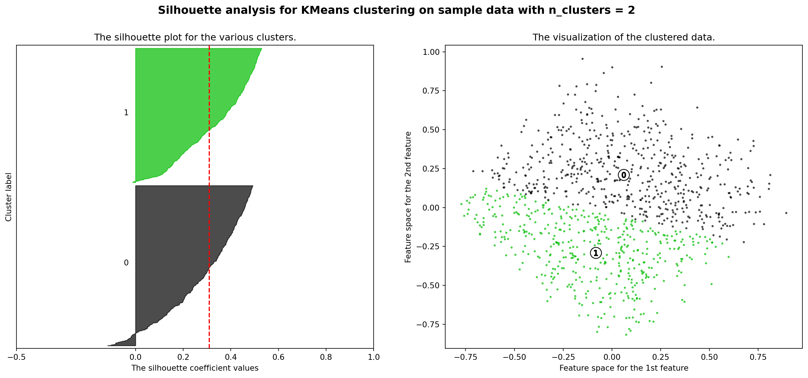
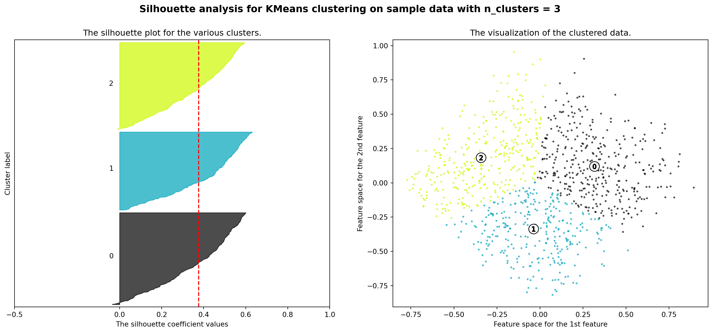
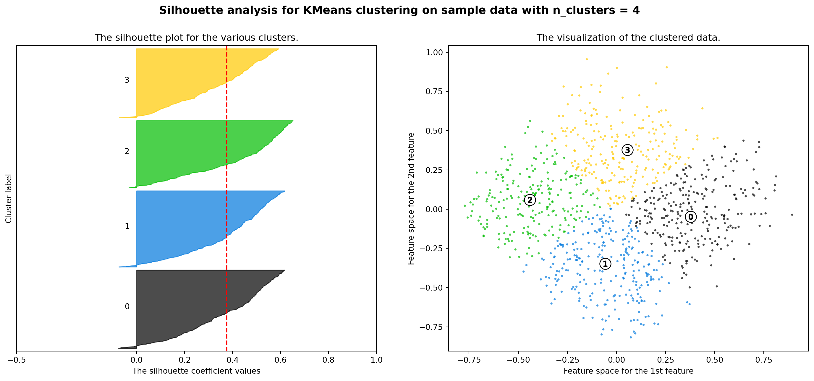
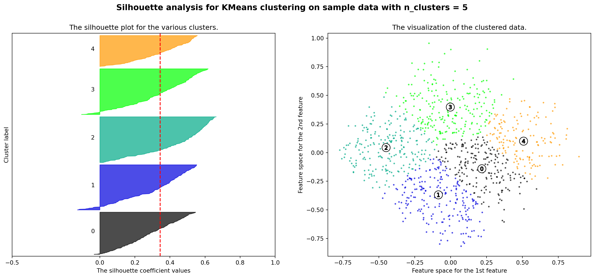
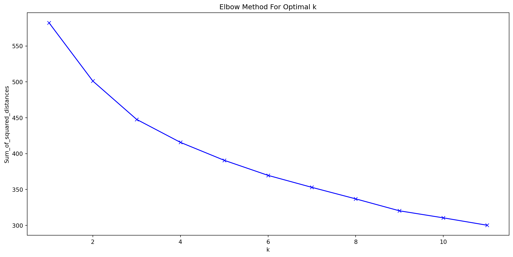
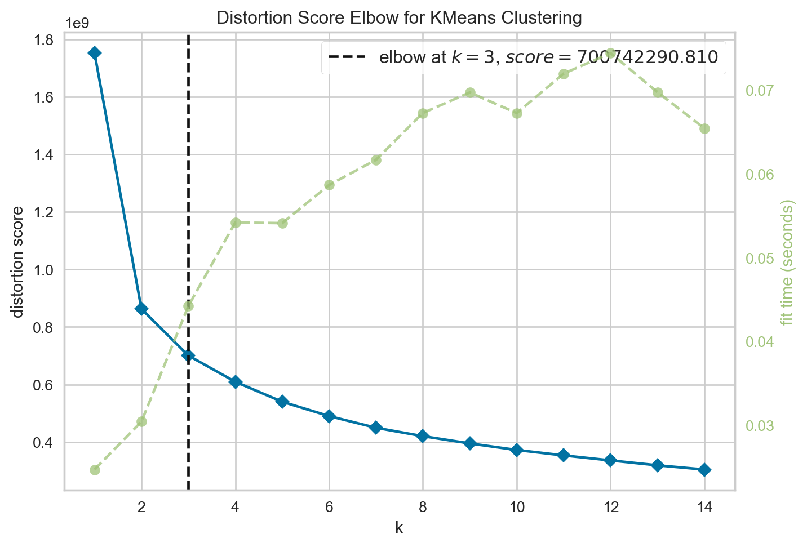
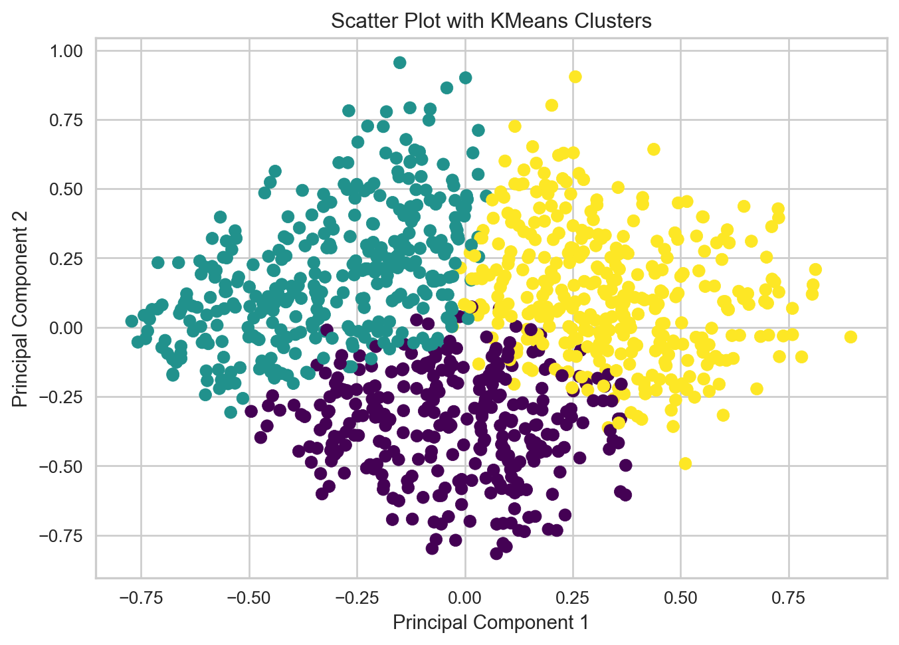

import pandas as pd
import numpy as np
import numpy as npd
import matplotlib.pyplot as pltIntroduction
In this blog post, we delve into the fascinating world of clustering to predict smartphone price ranges based on various features. The dataset consists of two parts: the training set (train.csv) containing features and the categorical target variable, “price_range,” and the test set (test.csv) lacking the target column. Our objective is to categorize smartphones from the test set into different clusters using the insights gained from the training set. The dataset can be found on Kaggle
Exploring the Datasets
Let’s begin by loading the datasets and exploring the first ten rows of the training set to understand the available features.
#load the datasets
df_test=pd.read_csv('./test.csv')
df_train=pd.read_csv('./train.csv')| battery_power | blue | clock_speed | dual_sim | fc | four_g | int_memory | m_dep | mobile_wt | n_cores | ... | px_height | px_width | ram | sc_h | sc_w | talk_time | three_g | touch_screen | wifi | price_range | |
|---|---|---|---|---|---|---|---|---|---|---|---|---|---|---|---|---|---|---|---|---|---|
| 0 | 842 | 0 | 2.2 | 0 | 1 | 0 | 7 | 0.6 | 188 | 2 | ... | 20 | 756 | 2549 | 9 | 7 | 19 | 0 | 0 | 1 | 1 |
| 1 | 1021 | 1 | 0.5 | 1 | 0 | 1 | 53 | 0.7 | 136 | 3 | ... | 905 | 1988 | 2631 | 17 | 3 | 7 | 1 | 1 | 0 | 2 |
| 2 | 563 | 1 | 0.5 | 1 | 2 | 1 | 41 | 0.9 | 145 | 5 | ... | 1263 | 1716 | 2603 | 11 | 2 | 9 | 1 | 1 | 0 | 2 |
| 3 | 615 | 1 | 2.5 | 0 | 0 | 0 | 10 | 0.8 | 131 | 6 | ... | 1216 | 1786 | 2769 | 16 | 8 | 11 | 1 | 0 | 0 | 2 |
| 4 | 1821 | 1 | 1.2 | 0 | 13 | 1 | 44 | 0.6 | 141 | 2 | ... | 1208 | 1212 | 1411 | 8 | 2 | 15 | 1 | 1 | 0 | 1 |
| 5 | 1859 | 0 | 0.5 | 1 | 3 | 0 | 22 | 0.7 | 164 | 1 | ... | 1004 | 1654 | 1067 | 17 | 1 | 10 | 1 | 0 | 0 | 1 |
| 6 | 1821 | 0 | 1.7 | 0 | 4 | 1 | 10 | 0.8 | 139 | 8 | ... | 381 | 1018 | 3220 | 13 | 8 | 18 | 1 | 0 | 1 | 3 |
| 7 | 1954 | 0 | 0.5 | 1 | 0 | 0 | 24 | 0.8 | 187 | 4 | ... | 512 | 1149 | 700 | 16 | 3 | 5 | 1 | 1 | 1 | 0 |
| 8 | 1445 | 1 | 0.5 | 0 | 0 | 0 | 53 | 0.7 | 174 | 7 | ... | 386 | 836 | 1099 | 17 | 1 | 20 | 1 | 0 | 0 | 0 |
| 9 | 509 | 1 | 0.6 | 1 | 2 | 1 | 9 | 0.1 | 93 | 5 | ... | 1137 | 1224 | 513 | 19 | 10 | 12 | 1 | 0 | 0 | 0 |
10 rows × 21 columns
Feature Engineering: Filtering the Noise
With numerous features at our disposal, the dataset can be noisy, potentially affecting the quality of our clustering. To address this, we employ a simple filter method using ANOVA (Analysis of Variance) to select the most important features.
df = df_train
all_col = [x for x in df_train.columns]
all_col = all_col[:-1]
y = df['price_range']
cat_col=['blue','three_g', 'dual_sim', 'four_g', 'wifi', 'touch_screen']anova_dict = {}
for col in all_col:
if col not in cat_col:
for i in df['price_range'].unique():
var_name = f"feat_{col}_{i}"
var_value = df[df['price_range']==i][col].values
anova_dict[var_name]=var_valuefrom scipy.stats import f_oneway
f_stat_all = []
p_val_all = []
for col in all_col:
keys_all = []
for key, value in anova_dict.items():
if str(col) in str(key):
keys_all.append(key)
if len(keys_all) > 0:
f_stat, p_val = f_oneway(anova_dict[keys_all[0]], anova_dict[keys_all[1]], anova_dict[keys_all[2]], anova_dict[keys_all[3]])
f_stat_all.append(f_stat)
p_val_all.append(p_val)anova_table = pd.DataFrame([[col for col in all_col if col not in cat_col], f_stat_all, p_val_all], index=['features', 'f_statistic', 'p_value']).T
anova_table| features | f_statistic | p_value | |
|---|---|---|---|
| 0 | battery_power | 31.598158 | 0.0 |
| 1 | clock_speed | 0.493708 | 0.686675 |
| 2 | fc | 0.772182 | 0.509504 |
| 3 | int_memory | 2.922996 | 0.032777 |
| 4 | m_dep | 1.500682 | 0.212459 |
| 5 | mobile_wt | 3.594318 | 0.013117 |
| 6 | n_cores | 2.625415 | 0.048936 |
| 7 | pc | 0.825446 | 0.479749 |
| 8 | px_height | 19.484842 | 0.0 |
| 9 | px_width | 22.620882 | 0.0 |
| 10 | ram | 3520.110824 | 0.0 |
| 11 | sc_h | 2.225984 | 0.08325 |
| 12 | sc_w | 1.671 | 0.171215 |
| 13 | talk_time | 1.628811 | 0.180669 |
selected_features=[x for x in anova_table[anova_table['p_value'] < 0.05]['features'].values]
selected_features['battery_power',
'int_memory',
'mobile_wt',
'n_cores',
'px_height',
'px_width',
'ram']Data Preprocessing: Scaling and Dimensionality Reduction
Before applying clustering algorithms, it’s crucial to preprocess the data. We use Min-Max scaling to normalize the selected features and then apply Principal Component Analysis (PCA) for dimensionality reduction.
df = df_test.loc[:,selected_features]
from sklearn.preprocessing import MinMaxScaler
mms = MinMaxScaler()
X = df.values
X_tr = mms.fit_transform(X)from sklearn.decomposition import PCA
pca = PCA(n_components=2)
X_pca = pca.fit_transform(X_tr)
df_pca = pd.DataFrame(data=X_pca, columns=['PC1', 'PC2'])Clustering and Evaluation
Silhouette Analysis: Understanding Cluster Quality
Silhouette analysis provides insights into the quality and separation of formed clusters. We utilize MiniBatchKMeans and visualize the silhouette scores for different cluster sizes. The code is taken from Scikit learn
from sklearn.cluster import MiniBatchKMeans
from sklearn.metrics import silhouette_samples, silhouette_score
import matplotlib.cm as cm
import numpy as nprange_n_clusters = [2, 3, 4, 5]
for n_clusters in range_n_clusters:
# Create a subplot with 1 row and 2 columns
fig, (ax1, ax2) = plt.subplots(1, 2)
fig.set_size_inches(18, 7)
# The 1st subplot is the silhouette plot
# The silhouette coefficient can range from -1, 1 but in this example all
# lie within [-0.1, 1]
ax1.set_xlim([-0.5, 1])
# The (n_clusters+1)*10 is for inserting blank space between silhouette
# plots of individual clusters, to demarcate them clearly.
ax1.set_ylim([0, len(X_pca) + (n_clusters + 1) * 10])
# Initialize the clusterer with n_clusters value and a random generator
# seed of 10 for reproducibility.
clusterer = MiniBatchKMeans(n_clusters=n_clusters, n_init='auto', random_state=0)
cluster_labels = clusterer.fit_predict(X_pca)
# The silhouette_score gives the average value for all the samples.
# This gives a perspective into the density and separation of the formed
# clusters
silhouette_avg = silhouette_score(X_pca, cluster_labels)
print(
"For n_clusters =",
n_clusters,
"The average silhouette_score is :",
silhouette_avg,
)
# Compute the silhouette scores for each sample
sample_silhouette_values = silhouette_samples(X_pca, cluster_labels)
y_lower = 10
for i in range(n_clusters):
# Aggregate the silhouette scores for samples belonging to
# cluster i, and sort them
ith_cluster_silhouette_values = sample_silhouette_values[cluster_labels == i]
ith_cluster_silhouette_values.sort()
size_cluster_i = ith_cluster_silhouette_values.shape[0]
y_upper = y_lower + size_cluster_i
color = cm.nipy_spectral(float(i) / n_clusters)
ax1.fill_betweenx(
np.arange(y_lower, y_upper),
0,
ith_cluster_silhouette_values,
facecolor=color,
edgecolor=color,
alpha=0.7,
)
# Label the silhouette plots with their cluster numbers at the middle
ax1.text(-0.05, y_lower + 0.5 * size_cluster_i, str(i))
# Compute the new y_lower for next plot
y_lower = y_upper + 10 # 10 for the 0 samples
ax1.set_title("The silhouette plot for the various clusters.")
ax1.set_xlabel("The silhouette coefficient values")
ax1.set_ylabel("Cluster label")
# The vertical line for average silhouette score of all the values
ax1.axvline(x=silhouette_avg, color="red", linestyle="--")
ax1.set_yticks([]) # Clear the yaxis labels / ticks
ax1.set_xticks([-0.5, 0, 0.2, 0.4, 0.6, 0.8, 1])
# 2nd Plot showing the actual clusters formed
colors = cm.nipy_spectral(cluster_labels.astype(float) / n_clusters)
ax2.scatter(
X_pca[:, 0], X_pca[:, 1], marker=".", s=30, lw=0, alpha=0.7, c=colors, edgecolor="k"
)
# Labeling the clusters
centers = clusterer.cluster_centers_
# Draw white circles at cluster centers
ax2.scatter(
centers[:, 0],
centers[:, 1],
marker="o",
c="white",
alpha=1,
s=200,
edgecolor="k",
)
for i, c in enumerate(centers):
ax2.scatter(c[0], c[1], marker="$%d$" % i, alpha=1, s=50, edgecolor="k")
ax2.set_title("The visualization of the clustered data.")
ax2.set_xlabel("Feature space for the 1st feature")
ax2.set_ylabel("Feature space for the 2nd feature")
plt.suptitle(
"Silhouette analysis for KMeans clustering on sample data with n_clusters = %d"
% n_clusters,
fontsize=14,
fontweight="bold",
)
plt.show()For n_clusters = 2 The average silhouette_score is : 0.3099031312287739
For n_clusters = 3 The average silhouette_score is : 0.3760007433407917
For n_clusters = 4 The average silhouette_score is : 0.37658001251847223
For n_clusters = 5 The average silhouette_score is : 0.3442148747365969



Elbow Method: Determining Optimal Cluster Count
The Elbow Method aids in finding the optimal number of clusters. We explore the sum of squared distances for different cluster counts to identify the ‘elbow’ point.
from sklearn.cluster import KMeans
import warnings
warnings.filterwarnings("ignore")
Sum_of_sq_distances = []
K = range(1,12)
for k in K:
km = KMeans(n_clusters = k)
km = km.fit(X_tr)
Sum_of_sq_distances.append(km.inertia_)
plt.figure(figsize=(15,7))
plt.plot(K, Sum_of_sq_distances, 'bx-')
plt.xlabel('k')
plt.ylabel('Sum_of_squared_distances')
plt.title('Elbow Method For Optimal k')
plt.show()
Yellowbrick Elbow Visualizer: An Alternative Visualization
The Yellowbrick library offers an interactive visualizer to assist in determining the optimal number of clusters.
from yellowbrick.cluster import KElbowVisualizer
kmeans = KMeans()
elbow = KElbowVisualizer(kmeans, k=(1, 15))
elbow.fit(X)
elbow.show()
import warnings
warnings.filterwarnings("ignore")
Final KMeans Clustering: Bringing It All Together
Having explored and evaluated different aspects, we apply KMeans clustering with the determined optimal number of clusters.
km = KMeans(n_clusters = 3)
km.fit(X_tr)
df['Cluster'] = km.labels_
plt.scatter(X_pca[:, 0], X_pca[:, 1], c=df['Cluster'], cmap='viridis')
plt.title('Scatter Plot with KMeans Clusters')
plt.xlabel('Principal Component 1')
plt.ylabel('Principal Component 2')
plt.show()
In conclusion, this blog post has unraveled the process of categorizing smartphones through a machine learning lens. From feature engineering to clustering evaluation, each step contributes to our understanding of the dataset and aids in efficient categorization. The exploration of various metrics and visualization techniques offers a comprehensive approach to solving this clustering problem, shedding light on the inherent patterns within the smartphone dataset.